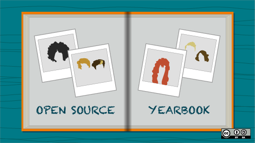
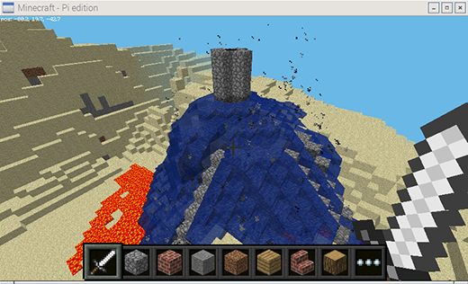
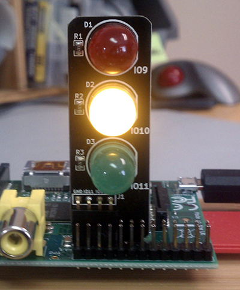
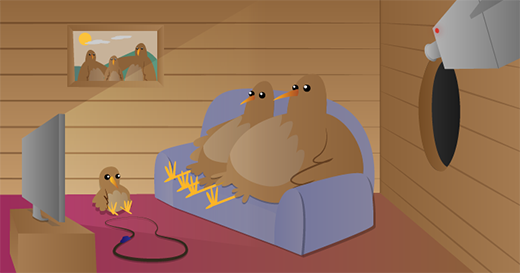
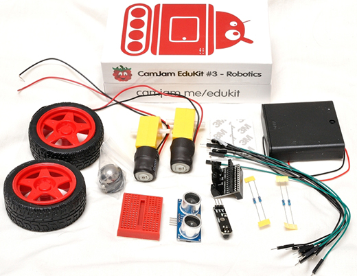

编译自：https://opensource.com/education/15/12/5-great-raspberry-pi-projects-classroom
作者： Ben Nuttall
原创：LCTT https://linux.cn/article-7355-1.html
译者： oska874
本文地址：https://linux.cn/article-7355-1.html


源于 Raspberry Pi 基金会. CC BY-SA 4.0
“我的世界”是世界上几乎每一个青少年都特别喜欢的一款游戏，而且它成功抓住了年轻人眼球，成为目前最能激发年轻人创造力的游戏之一。这个树莓派版本自带的我的世界不仅仅是一个具有创造性的建筑游戏，还是一个具有编程接口，可以通过 Python 与之交互的版本。
我的世界：Pi 版对于老师来说是一个教授学生解决问题和编写代码完成任务的好方式。你可以使用 Python API 创建一个房子，并且一直跟随这你的脚步移动，在所到之处建造一座桥，让天空落下熔岩雨滴，在空中显示温度，以及其它你可以想象到的一切东西。
详情请见 "我的世界: Pi 入门"

源于 Low Voltage Labs. CC BY-SA 4.0
使用树莓派可以很轻松地进行物理计算，只需要连接几个 LED 和按钮到开发板上的 GPIO 接口，再用几行代码你就可以按下按钮来开灯。一旦你了解了如何使用代码来完成这些基本的操作，接下来就可以根据你的想象来做其它事情了。
如果你知道如何让一个灯闪烁，你就可以控制三个灯闪烁。挑选三个和交通灯一样颜色的 LED 灯，然后编写控制交通灯的代码。如果你知道如何使用按钮触发事件，那么你就可以模拟一个行人过马路。同时你可以参考其它已经完成的交通灯附件，比如PI-TRAFFIC, PI-STOP, Traffic HAT，等等。
代码并不是全部——这只是一个演练，让你理解现实世界里系统是如何完成设计的。计算思维是一个让你终身受用的技能。
源于 Raspberry Pi 基金会. CC BY-SA 4.0
接下来试着接通两个按钮和 LED 灯的电源，实现一个双玩家的反应游戏 —— 让 LED 灯随机时间点亮，然后看是谁抢先按下按钮。
要想了解更多可以看看 GPIO Zero recipes。你所需要的资料都可以在 CamJam EduKit 1 找到。
Astro Pi —— 一个增强版的树莓派 —— 将在 12 月问世，但是你并没有错过亲手把玩这个硬件的机会。Sense HAT 是使用在 Astro Pi 的一个传感器扩展板，现在已经开放购买了。你可以使用它来进行数据搜集、科学实验，游戏等等。可以看看下面树莓派的 Carrie Anne 拍摄的 Gurl Geek Diaries 的视频，里面演示了一种很棒的入门途径——在 Sense HAT 屏幕上自己设计一个生动的像素宠物：视频（墙外）。
详见 "探索 Sense HAT."

源于 Raspberry Pi 基金会. CC BY-SA 4.0
让整个班级都可以参与进来的好主意是在鸟笼里放置一个树莓派和夜视镜头，以及一些红外线灯，这样子你就可以在黑暗中看见鸟笼里的情况了，然后使用树莓派通过网络串流视频。然后就可以等待小鸟归笼了，你可以在不打扰的情况下近距离观察小窝里的它们了。
要了解更多有关红外线和光谱的知识，以及如何校准摄像头焦点和使用软件控制摄像头，可以访问 打造一个红外鸟笼。

源于 Raspberry Pi 基金会. CC BY-SA 4.0
只需要一个树莓派、很少的几个电机和电机控制器，你就可以自己动手制作一个机器人。可以制作的机器人有很多种，从简单的由几个轮子和自制底盘拼凑的简单小车，到由游戏控制器驱动、具有自我意识、配备了传感器，安装了摄像头的金属小马。
要学习如何控制不同的电机，可以使用 RTK 电机驱动开发板入门或者使用配置了电机、轮子和传感器的 CamJam 机器人开发套件——具有很大的价值和大量的学习潜力。
或者，如果你还想了解更多核心内容，可以试试 PiBorg 的 4Borg(£99/$150)和 DiddyBorg(£180/$273)，或者购买 Metal 版 DoodleBorg (£250/$380)，然后构建一个最小版本的 DoodleBorg tank（非卖品）。
详情可见 机器人装备表。
via: https://opensource.com/education/15/12/5-great-raspberry-pi-projects-classroom
作者：Ben Nuttall 译者：ezio 校对：Caroline
编译自：https://opensource.com/education/15/12/5-great-raspberry-pi-projects-classroom
作者： Ben Nuttall
原创：LCTT https://linux.cn/article-7355-1.html
译者： oska874
本文由 LCTT 原创翻译，Linux中国首发。也想加入译者行列，为开源做一些自己的贡献么？欢迎加入 LCTT！
翻译工作和译文发表仅用于学习和交流目的，翻译工作遵照 CC-BY-NC-SA 协议规定，如果我们的工作有侵犯到您的权益，请及时联系我们。
欢迎遵照 CC-BY-NC-SA 协议规定转载，敬请在正文中标注并保留原文/译文链接和作者/译者等信息。
文章仅代表作者的知识和看法，如有不同观点，请楼下排队吐槽 :D
Linux.CN © 2003-2016 Linux中国 | Powered by DX | 图片存储于七牛云存储
京ICP备05083684号-1 京公网安备110105001595
服务条款 | 除特别申明外，本站原创内容版权遵循 CC-BY-NC-SA 协议规定


分享到微信朋友圈
打开微信，点击底部的“发现”，
使用“扫一扫”将网页分享至朋友圈。